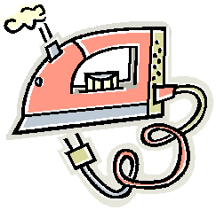

Мне письмо прислала дочка:
Она ходит в первый класс.
Всё письмо на пол-листочка,
Но прелестный в нём рассказ.
Как она ходила с мамой
В настоящий зоопарк.
Где увидела за рамой,
Как резвится леопард.
И жирафа с шеей длинной,
(Как подъемный кран стоял)
И медведя, и павлина,
Зверя с именем шакал.
И ещё, мне пишет Лена,
Пуму видела она.
И пятнистого оленя,
Носорога и слона,
Дикобраза и гиену.
И пантеру, и лису.
Танец зебр немую сцену –
Полосатую красу.
Не смогла смотреть без страху
На волка и грозных львов,
Великана – черепаху
Весом больше ста пудов.
Так письмо писала дочка
И заканчивает вдруг:
- Всё. Кончаю. Ставлю точку.
Детский мне пришли утюг.
